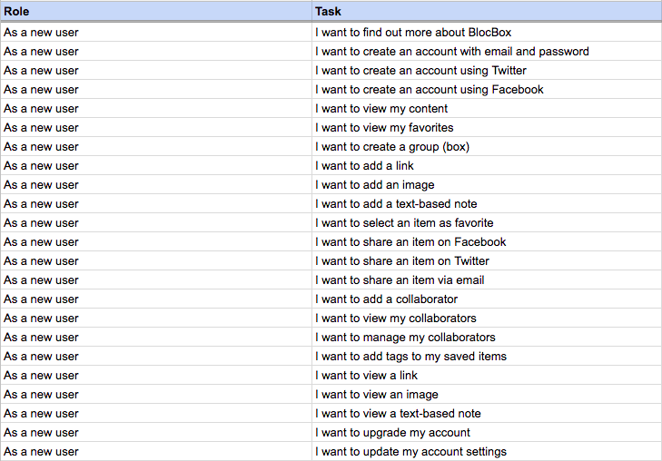
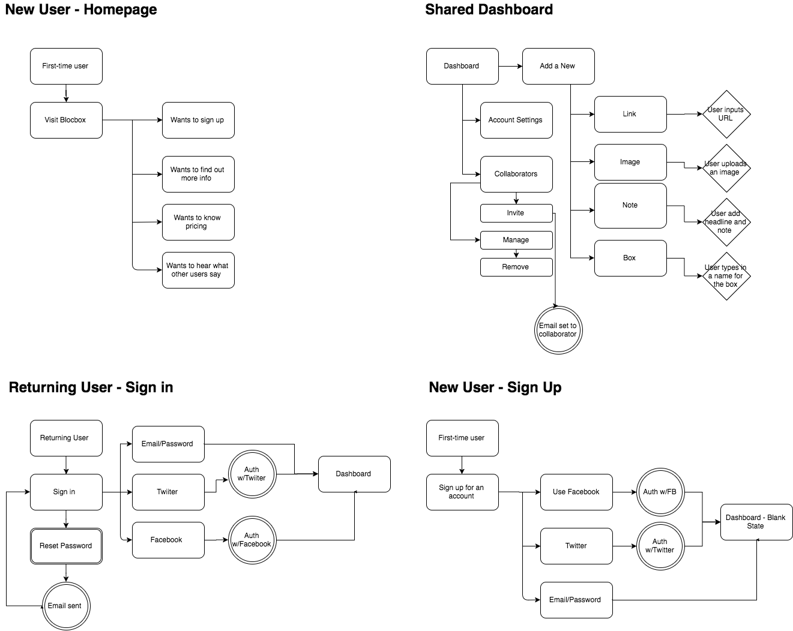
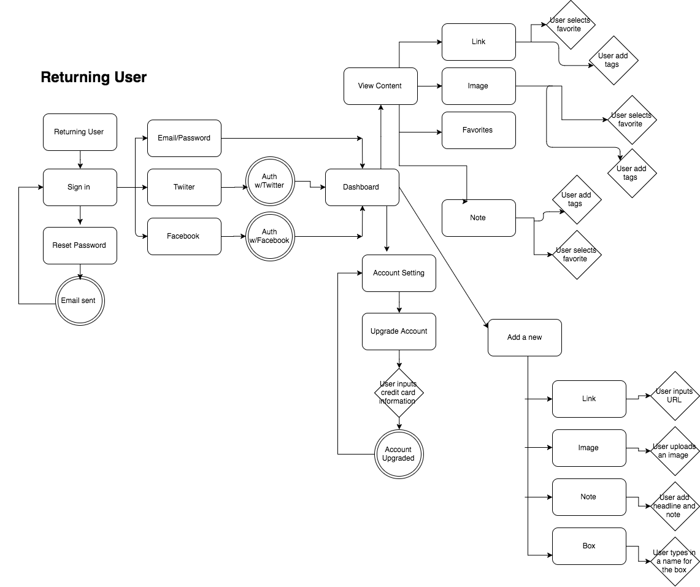
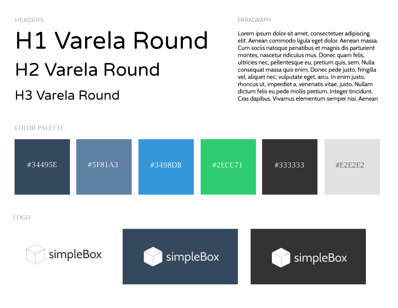
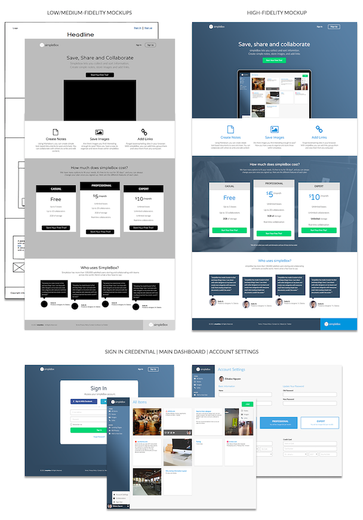
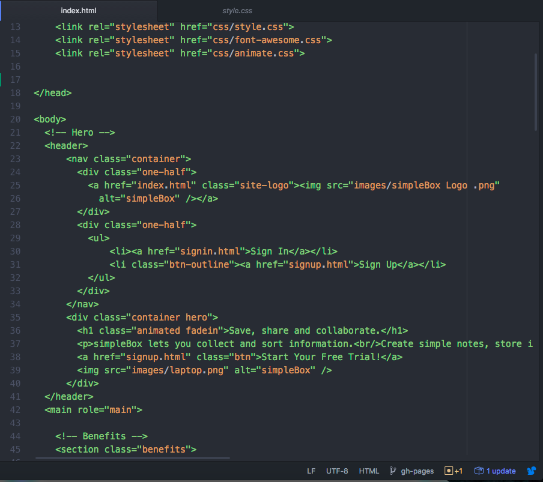

A web application that allows users to collect information and store it in a centralized location.
simpleBox is a SaaS web application which allows users to collect information and store it in a single place. Users can create documents, store images, links to websites, and collaborate with others.
2 Months
UX Research, Contextual Interviews, Competitive Analysis, Usability Testing, Responsive Web Design
Sketch, Balsamiq, Photoshop, Illustrator, Invision, HTML, CSS, Javascript
Due to the increase amount of mobile collaboration tools, technological jargon and cluttered features deter users from using the specific product. In addition, people have a difficult time remembering where they saved notes, images, and links when using some of these tools.
simpleBox simplifies the problem and creates a cloud-based file storage service that is easily accessible for all users to conveniently save and share content and collaborate with other users across multiple devices. View the clickable prototypes here.
User surveys and user stories were used to decide what features are necessary for simpleBox. To do that, I sent out a survey to find out what users were proactively using, their habits, and their competition in content and devices use. From the data that I’ve collected, I was able to come up with appriopriate user stories and personas to help me understand users’ goals, behaviors, and how they will interact with the application. Click here to view the survey questions.
Based on the survey, I was able to determine that simpleBox needs to be accessbile across multiple platforms because majority of users use laptop or smartphones to browse the internet. Additionally, organization and centralization seems to be the main theme from the survey. Many users feel that some of the tools they use leads to a clutter space, particulary bookmarking. Therefore, it is important that simpleBox provides a space of organization for the end-users.
From the research, I made a list of user stories to help me create user flows. In order to easily identify the steps taken to the end-process, I focus on the different user experience for both new and returning users, with several similarities. This process helped me craft and prioritize the minimum viable product features for simpleBox. Click here to view the user flow
 The next step in building the application is deciding on the brand and typography. The main goal of this web app is to provide a collection of notes, images, and links where users can store and share. Therefore, I wanted the brand and typography to reflect on the scheme of both professional and casual usage.
After defining the brand identity for simpleBox, I created low-fidelity/medium fidelity wireframes with balsamiq and photoshop to test on usertesting.com and in-person to see whether the product was user friendly to the users. These are the main questions that I asked.
After going through user testing for the low/medium prototypes and making iteration based on feedback, I used Sketch to create high-fidelity prototypes. Then I made another clickable prototypes on InVision and asked a few more users to navigate through the prototypes and provide feedback. I also conducted another unmoderated user test. You can view the full video here. Below are the discussion questions I asked during the usability testing.
Overall, users thought that the experience was pleasing and that the application is presentable in a simplified, yet professional design. The responses were more convincing when testing with the high-fidelity wireframes because users were able easily visualize the final presentation of the platform. In addition, when asked to sign in and create either a note, image, or link, users had no trouble taking that action and were able to do so without any frustrations.
From the testing, I found out that there was a slight delay when users were attempting to add content to simpleBox. To tackle this issue, I created two versions of the dashboard with two different placements of the add button. Afterwards, I conducted a preference test on UsabilityHub to see which version is more intuitive. Based on the results, version one (original) performs better than version two by 80:20. The test had 10 responses which may not be the best representative of the majority. Although the add button in version two is bigger, it was slightly more difficult to spot according to some users. Therefore, it was safe to conclude that the placement of the add button in version one is more intuitive. Click here to view the results of the preference test
After researching, user testing, and designing through Balsamiq, Illustrator, and Photoshop/Sketch, the final product was completed with harmoniously-working colors and design elements that achieve simpleBox’s goal in creating a friendly user experience in collecting and sharing contents.
From simpleBox, I learned the importance of relying on data and interviews to create an intuitive product for the end-user. Designing is more than just creating visually appealing elements. It’s easy to detach myself from designing from the user’s experience, but something that is designed from my own satisfactory might not be intuitive to other users. In addition, understanding the code methods for mobile-first development was slightly challenging, but worth it in today’s advancement in creating good user experience. It’s important to keep in mind that many users today use their mobile devices to browse through different applications on the net. Click here to view the interactive prototype
HTML, CSS, and Javascript were used in conjunction to develop the homepage of Simplebox. Because Simplebox is targeted for users to access through different devices, I designed the homepage as mobile-first to ensure its responsiveness across different outlets. You can view the homepage development here
